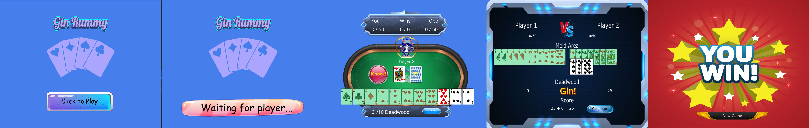

Gin Rummy

Gin Rummy is a two-player card game built in Python with Pygame, designed around the full round flow of drawing, discarding, sorting hands, knocking, calling gin, and tracking match scores. It combines custom artwork with a client-server setup so two players can play the same match across a local network.
Core Technologies
- Python - Main language for gameplay logic, networking, and application flow
- Pygame - Core game framework used for rendering, input handling, game loop management, and screen updates.
- Python Sockets - TCP socket communication used to send and receive game state updates between the server and both players.
- Threading - Handles concurrent player connections on the server side
- Object-Oriented Design - Encapsulated game state across player, game, and condition classes
Supporting Technologies
- Pickle Serialization - Serializes player and game state objects for transmission across the network.
- Custom Assets - Hand-crafted card, button, scoreboard, and victory screen art
- Modular Button Handlers - Client and server button logic separated to keep event handling organised and maintainable.
- State Validation - Win, deadwood, and round conditions managed through dedicated game checks
- Git & GitHub - Version control and project iteration
Project Highlights
Full Round Gameplay
Players can draw from the deck or discard pile, reorganize their hand, and make tactical decisions around knocking or pushing for gin.
Multiplayer
A local socket server keeps both players synchronized so turns, scores, and card state remain consistent across the game.
Automatic Set Highlighting
Cards that form valid sets or runs are automatically highlighted, helping players quickly recognise scoring combinations in their hand.
Deadwood Scoring
The game evaluates leftover card values, compares both hands at round end, and applies score changes based on standard Gin Rummy outcomes.
Knock, Gin, and Undercut
Important round-ending buttons are surfaced clearly so the player immediately knows when they can end a round.
Custom Interface Art
The table, scoreboard, buttons, and end screens were edited and customised for use throughout the game interface.